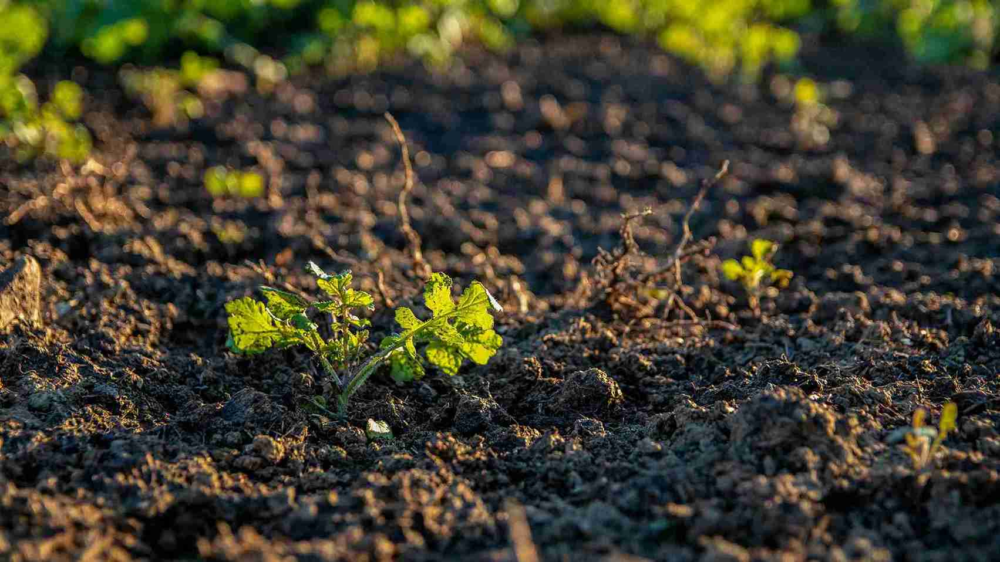
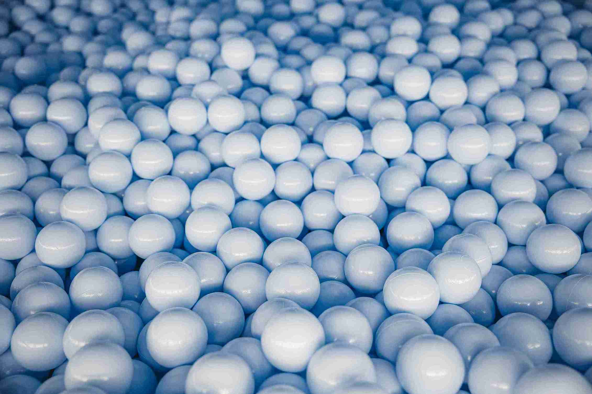

Pupuk Organik

Pupuk organik adalah pupuk yang berasal dari bahan-bahan alami seperti kompos, pupuk kandang, atau bahan organik lainnya. Pupuk ini ramah lingkungan dan membantu meningkatkan struktur tanah serta kualitas hasil panen. Kami menyediakan berbagai jenis pupuk organik yang cocok untuk pertanian dan perkebunan, seperti pupuk kompos, pupuk hijau, dan pupuk cair organik. Penggunaan pupuk organik secara berkala dapat meningkatkan kesuburan tanah dan mengurangi ketergantungan pada pupuk kimia.
Pupuk Kimia

Pupuk kimia adalah pupuk yang diproduksi secara sintetis dengan kandungan nutrisi tinggi seperti nitrogen, fosfor, dan kalium (NPK). Pupuk ini efektif untuk memberikan nutrisi cepat kepada tanaman, meningkatkan produktivitas, dan mempercepat pertumbuhan. Kami menyediakan berbagai jenis pupuk kimia seperti urea, TSP, KCL, dan pupuk majemuk yang sesuai untuk berbagai jenis tanaman pertanian dan perkebunan.
Penggunaan pupuk kimia harus dilakukan dengan bijak untuk menghindari pencemaran lingkungan. Kami selalu merekomendasikan penggunaan sesuai dosis yang tepat berdasarkan jenis tanah dan tanaman. Dengan kombinasi pupuk organik dan kimia, Anda dapat mencapai hasil panen yang optimal dan berkelanjutan.